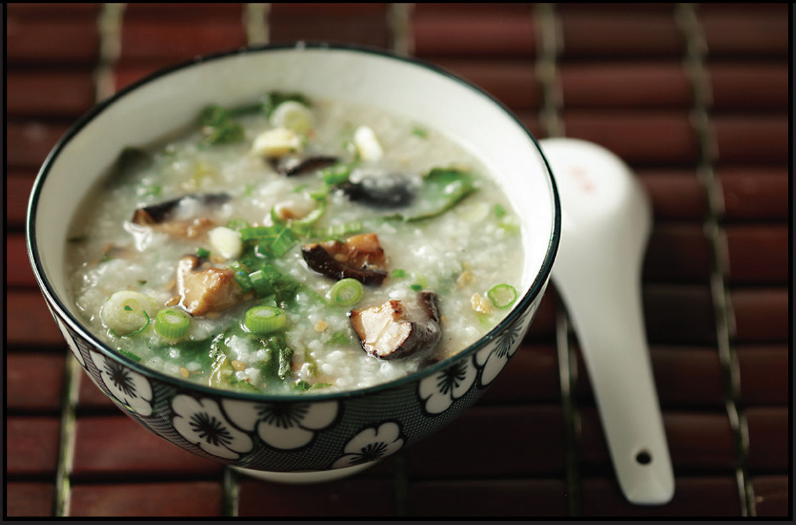

CONGEE WITH WILTED LETTUCE AND MUSHROOMS
Yield Serves 4 Active Time 15 minutes Total Time 1¼ hours |
You can use rehydrated wood ears instead of shiitake or, if you have Soy-Glazed Mushrooms (here), just toss those straight into the congee (skip the stir-frying step if using them). |
INGREDIENTS
½ cup (about 3.5 ounces/100 g) short-grain or jasmine rice
Water or low-sodium chicken or vegetable stock (6 cups for short-grain, 5 cups for jasmine)
1 tablespoon (15 ml) peanut, rice bran, or other neutral oil
4 ounces (120 g) shiitake mushroom caps, thinly sliced (see Note)
2 medium garlic cloves, smashed in a mortar and pestle or finely minced (about 2 teaspoons/5 g)
1 tablespoon (15 ml) Shaoxing wine
1 teaspoon (5 ml) light soy sauce or shoyu
1 head romaine lettuce, cut crosswise into ½-inch ribbons
3 scallions, thinly sliced
Kosher salt and freshly ground white pepper

Working in Western kitchens, wilted lettuce is a sign of a vegetable past its prime that has only one home: the compost bin. But once you wrap your head around the idea that lettuce doesn’t have to be crisp and firm, you’ll find that wilted lettuce can be delicious. My favorite way to enjoy it is in a bowl of silky congee. Simple lettuces like iceberg and romaine achieve a unique moist yet crunchy texture with a more concentrated flavor than raw lettuce has.
DIRECTIONS
1 Combine the rice and water or stock in a wok or large saucepan. Bring to a simmer over high heat, stirring occasionally. Reduce to a bare simmer and cook, stirring occasionally, until the rice is completely tender and the water has thickened into a velvety porridge, about 1 hour total. Keep the cooked congee warm. (Transfer to a saucepan if you cooked it in your wok; you’ll need your wok for the next steps.)
2 Heat the wok over high heat until lightly smoking. Add the oil and swirl to coat. Add the mushrooms and stir- fry until tender, about 1 minute. Add the garlic and stir- fry until fragrant, about 15 seconds. Add the wine and soy sauce and toss until reduced and the wok is mostly dry, about 30 seconds.
3 Transfer the mushrooms to the congee. Bring the congee to a brisk simmer and add the romaine. Stir until wilted, about 1 minute. Stir in the scallions, reserving some for garnish. Season with salt and white pepper to taste. Sprinkle with the reserved scallions and serve.